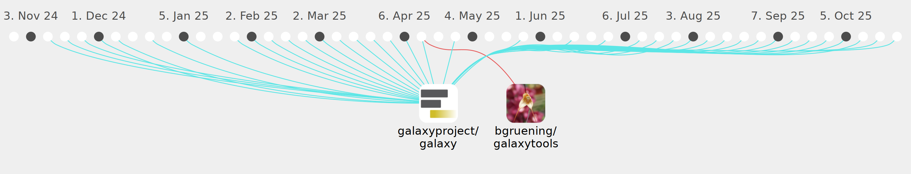

itisAliRH

Commits all-time: 1448
Commits last year: 525

(524)
- 6d8ddfc
- f3cb0f7
- a903e6e
- 815a235
- e255c68
- 1e6a09f
- 1370bb4
- 65acc1e
- 6f85497
- 5409082
- 0f2eeb7
- f59159f
- eb20e88
- 2113d36
- 4d44cd7
- 061acc9
- d01e3cc
- 62b26a9
- b284d1e
- ab22a05
- 1bfb4dc
- ca348d3
- df744c8
- b504886
- aca3898
- ca08262
- 5f6c5bb
- b8df344
- 27deb5a
- 7eb54e1
- a0ff546
- fdd8104
- 0f194e7
- e3c2a38
- d3f3bf3
- fe5ebd7
- 885b3c3
- d3e07c2
- 850ddcb
- aa4b338
- 16c2bc2
- e403c41
- 3752b6b
- 1f2ab11
- c8fb927
- 466bba9
- 8fbd324
- 9955da4
- ecb5144
- b682351
- bc8299c
- c13d82a
- 6279c8a
- 7ce90d0
- 817e09c
- fa997d5
- e31abf6
- 735af12
- 5cb57e3
- 97631af
- fddeaed
- ec5a441
- f319454
- 7b385e8
- 499ce18
- 26b7a8b
- fa0a491
- 4f24ec2
- 4307872
- 9dda591
- 7149582
- 3ac2168
- d3062a3
- a316a63
- 8040e84
- 197d326
- 2361193
- 59d1eef
- 5c6edcf
- 9419e25
- 5dc69e4
- 15416fd
- 6d3a569
- 2d1f99a
- 062e7cc
- 10aec96
- 966a99a
- 3843322
- f5a9e25
- 29cfcc9
- 2374164
- fe502b6
- 1db50b9
- 7282192
- 3e0b33f
- 8a39d7b
- adff442
- 23d1afa
- 0d873da
- 88240f8
- db76c62
- 2e73009
- 732a717
- 0ecdd8c
- 87d0889
- 9e29eff
- cf90b34
- b8b94e8
- ce91de0
- 3fe4995
- 3e31f69
- 3d96abd
- 7acb5a8
- 58e7c9d
- 8f1ad24
- 19cfe33
- 9d654f2
- 7064067
- d7441b5
- 35541b1
- ab0f130
- 4372bc5
- aa4b764
- 358f753
- 691ce42
- 409be00
- 7b80f68
- d23cf53
- a90ab5c
- f8fdcad
- e827070
- 1ba60ad
- 413fb09
- 9a5ef34
- 341edee
- 5b4564e
- 886105e
- e04432e
- 5ae8220
- 77cabe3
- 5b5baf4
- c31e70a
- 026b688
- 239a235
- f27ce0c
- ae0522a
- 964b5fb
- 7d28fef
- e54bb1f
- d81385f
- e0417eb
- 7aa2efb
- 4fc8b25
- a013e10
- 0b4d9ec
- 6b62fb4
- 4c7a916
- a5557a7
- e20dd61
- cd34d41
- 8cc3267
- 2f7a865
- 2bca4a5
- c5feb71
- 5416f2a
- bd2e1ad
- 1d34394
- 296d448
- bac241d
- 51f9e4c
- 80c1281
- 85f284f
- 4136244
- ffd3f1f
- 039e845
- 7b35349
- e22d5e9
- 9610798
- 5e2a6db
- 3eff115
- feaa3b0
- 96d9329
- 62c4132
- f8538e1
- 722d029
- 7fb5cd6
- 3ef832e
- c8d67a5
- bcd4905
- 9e4bd72
- 6806951
- 714686d
- 1af153c
- da46daf
- c976847
- cec0905
- b348ca7
- 69183c3
- acae172
- f701912
- ecafbb3
- 47876fd
- 732795c
- ab6b6ac
- 04949ce
- e8c6380
- 37a6aff
- 8e2161d
- e185efe
- 3b7a50e
- 8d0abd0
- 03cd06b
- 6d2d53a
- 0201e3c
- 7ca7f5e
- 2319dca
- 3ee3668
- fb94723
- f0233f2
- f056857
- 4f662e5
- 21348c0
- 387d114
- a717353
- d92f9a4
- 577bbd4
- 97c4e5f
- 553cd01
- 67c0120
- d352d70
- 91e7c31
- 6d0ce32
- 2ff32db
- 002cbc5
- 23f488a
- 29bc47d
- d4c65cf
- d277556
- 12e3c4d
- 6ffa2ba
- 475a9c4
- 58a3ada
- 35c57ca
- 512493a
- 011da29
- 48ef618
- 18b5037
- ef2b512
- 39ec12a
- 24a4db5
- 2a743f5
- aaee797
- 7bd98e9
- 59695bf
- d3d9ff9
- 58c2c58
- 7d6e244
- dff396e
- d637585
- e94ef24
- d655b56
- 135c68b
- 06a8e60
- cddad57
- 3894ed1
- 97fbd4d
- 99d7c82
- 3dcc13c
- 3a0306b
- c136fef
- 2510bde
- 8a1029a
- 985e7cb
- 2c91c7a
- 916cb07
- 3cdd5f4
- aa63a12
- f560519
- 2ea5fdb
- aece02a
- 3c24f13
- 12e65a9
- a013d77
- eb7f9a0
- 9c076c7
- f46b311
- 6722974
- f35bec0
- 4e7b577
- 76190c3
- c53fa06
- 90f6f4e
- b69b993
- 10c2ae8
- 10b73b1
- 0c10ea5
- 7054cf3
- 1ceb254
- 37a731d
- 06819aa
- 20b7da0
- 2466217
- 559567e
- de13427
- f482eec
- c129b8c
- 54e9ded
- 1fb9562
- abebcfc
- 0d9ae69
- c932eb4
- 9b30e9f
- 15082f7
- 5cfccee
- 05a30e2
- be79dfc
- b1a2658
- 9a69af1
- 99f9e51
- cb8281d
- dc4bdd9
- 4eab0a3
- 4425b9d
- fbed8c4
- 8be9a49
- 170bf8d
- 8650072
- 558d65f
- 640ccc7
- 56dc017
- ae50988
- 6dbce7e
- 587d06f
- a9643e0
- ec8e324
- ffff897
- c435317
- b20e84b
- 7ff8e81
- 35e1310
- 98cd8fc
- fc2ed8c
- dce7afc
- a648426
- dcf9c3a
- c9614cf
- f7843f0
- 5811b67
- e378a24
- 1080fd8
- 6ff6266
- e86de10
- 4d12690
- 351072a
- 5b5ffa0
- 6f5ef32
- 5e89840
- 777e496
- 93e1103
- 607eda6
- 42de5f8
- 813dc2e
- 0216580
- ff0b930
- 056aacc
- c599eff
- 4d6cbcc
- e446dea
- 0285a69
- 736bf7e
- 856eb09
- 70ca6c4
- 2db4d79
- 85dcb10
- 1d0ff5b
- d3b48f1
- ecdbcb2
- a646e81
- 2f05f93
- e27e09e
- eb088c0
- 4a80b3c
- ce4d9e4
- 0900ebc
- 6e08255
- 1c3d994
- 1ca424b
- 62957b2
- 7c193c7
- 97f0438
- beee4f5
- 26a4a03
- 28351c1
- 4c47334
- 5279f25
- 81d72d3
- 9ea682c
- c389ddb
- d54a7e4
- 9b0da94
- 56d485f
- 8ddd13e
- 25347ee
- aaaab6d
- 145acb2
- 33d83de
- a61aca1
- cadfeec
- 4c731d5
- 0e53856
- ba0765a
- 561e961
- 678a883
- 27f9f91
- 29c4105
- 39f808a
- 3db6628
- 84dd721
- 411237f
- e7830bc
- 3407134
- 499595d
- a0c3b51
- 8f7767b
- 1346c7a
- 9e8b680
- 51abfe9
- 9966d69
- 2fca63a
- 4016c1b
- 28e0f2b
- c547dcc
- e996616
- f2d5d58
- a5be981
- c7b67bf
- 0fef8ba
- 3b3da05
- 9176cbb
- 0f1d30c
- a65caa1
- fb8c5a9
- 70c9bd2
- 8f733ee
- b3def84
- 6936c10
- f5cccfd
- ff2f6fa
- b4eef69
- 6368010
- 6bd7086
- d6b9817
- 211a38e
- f93778b
- 5a304e6
- 9047c07
- 221f946
- 5e69780
- 3a1cb09
- 52b5305
- e84893c
- f9f8dac
- 19cc91e
- f081998
- aa144bd
- f47c938
- 2e69e7e
- c283ac9
- 48c566b
- dd79b52
- ab7baca
- 72a5631
- 386b950
- 936113e
- 5b74186
- c971e0b
- 1568e47
- 51891dd
- 47fece7
- e2e0051
- b59c25d
- 6ee3a5b
- cc39f20
- 4905863
- 321440c
- 30b6d5c
- ebeda43
- 6ab8f95
- 1fc420c
- 70a7629
- e6492a1
- 71538cd
- 6f992fa
- 9cc2a21
- 557dab0
- 0609dbe
- 269fd94
- cc51843
- b41a8cb
- 73c94b4
- d268f86
- de2d7a7
- 24daa84
- 2ccd305
- 4c64b80
- 5e565fe
- fbeedc7
- 26db30e
- 780ece4
- 8fcf787
- 7a4d3bd
- 7f527bd
- 77bdd66
- 226241a
- bab53e8
- 49796d2
- a08e75a
- 57affb5
- 88d331b
- c9b95d6
- 44a9ebb
- 3faede3
- 4064b10
- 0f7af8a
(1)